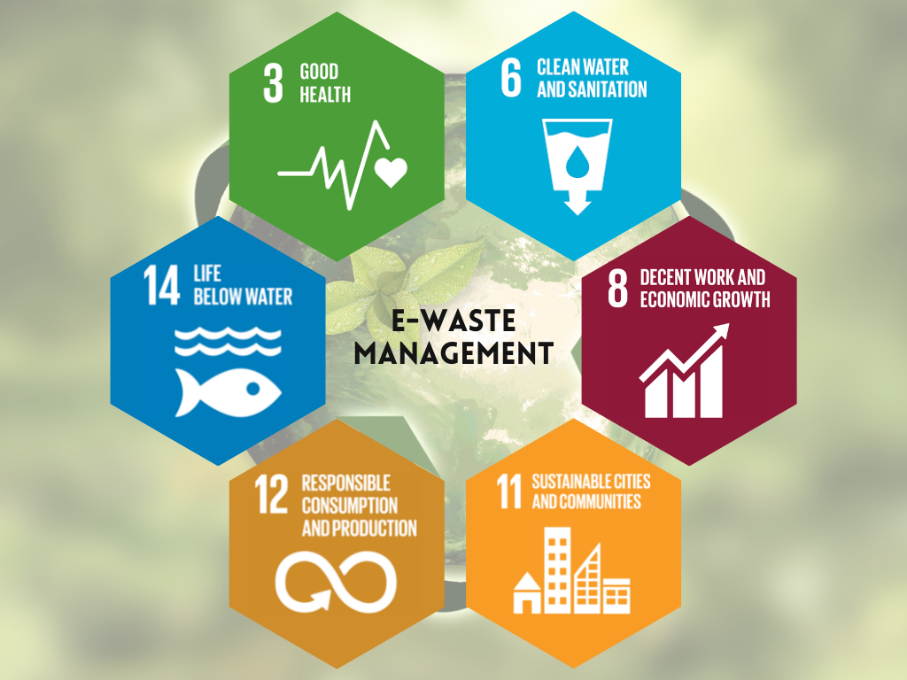
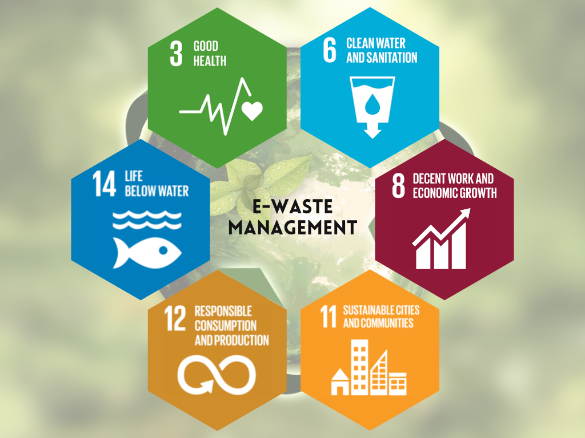

Causes of E-Waste
The rapid increase in electronic waste (e-waste) is primarily driven by the relentless pace of technological advancement and consumerism. As new devices emerge, older models quickly become obsolete, leading to a significant rise in discarded electronics. Factors such as planned obsolescence, where manufacturers intentionally design products with a limited lifespan, exacerbate the problem. Additionally, the growing demand for the latest gadgets fuels a cycle of constant upgrades, further contributing to e-waste accumulation. This situation is compounded by inadequate recycling infrastructure and public awareness, resulting in harmful environmental impacts and the loss of valuable resources embedded in discarded electronics.
Advantages and Disadvantages of E-Waste
| Advantages | Disadvantages |
|---|---|
| Resource Recovery: E-waste contains valuable materials like gold, silver, copper, and rare earth elements. Recycling e-waste can help recover these resources, reducing the need for mining and the associated environmental impact. | Toxic Pollution: Improper disposal of e-waste can lead to the release of hazardous substances like lead, mercury, and brominated flame retardants into the environment, contaminating soil and water sources. |
| Reduced Pollution:s Proper recycling of e-waste can help prevent toxic materials, such as lead, mercury, and cadmium, from leaching into soil and water systems. This reduces the potential for soil and water pollution. | Landfill Space: E-waste contributes to the growing problem of landfills, which can take up valuable space and lead to further environmental degradation if not managed properly. |
| Energy Savings: Recycling e-waste often requires less energy than producing new materials from raw sources. This energy efficiency can lead to lower greenhouse gas emissions and a reduced carbon footprint. | Resource Depletion: Although recycling can recover valuable materials, improper e-waste management may lead to resource depletion if devices are not reused or recycled effectively. |
| Promotion of Sustainable Practices: The e-waste recycling industry encourages the development of sustainable waste management practices. This can promote a circular economy where materials are reused and recycled, reducing overall consumption and waste. | Greenhouse Gas Emissions: If e-waste is incinerated or disposed of inappropriately, it can release greenhouse gases into the atmosphere, contributing to climate change and air pollution. |
Images of Advantages and Disadvatages

 
